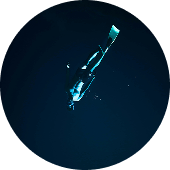
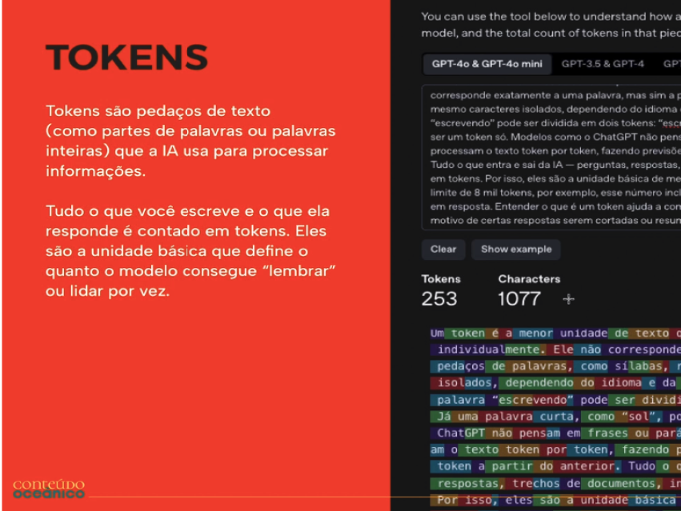

— Sete fases entre o que você sabe e o conteúdo que constrói sua autoridade.
Crie conteúdos
que tornem visível
a sua capacidade
Um método editorial para especialistas, profissionais liberais e comunicadores de marca transformarem conhecimento em conteúdo longo, autoral e duradouro: artigos, livros, podcasts, aulas, canais de vídeos, palestras.
Manu Leão EDITORA E ESPECIALISTA EM COMUNICAÇÃO
Nesse curso,
você vai descobrir:
-
Como transformar um conhecimento técnico e complexo em um conteúdo acessível, fluido e interessante.
-
Como usar o sistema de conteúdo-mãe para transformar seu raciocínio em múltiplos formatos de conteúdo de profundidade espalhados por diferentes plataformas.
-
Como construir e dominar sua Mídia Proprietária: o passo a passo para criar uma linha editorial e o conteúdo dos seus próprios canais para parar de ser refém das mudanças dos algoritmos das redes sociais.
-
Como a Inteligência Artificial pode ser usada estrategicamente para potencializar sua criatividade e dar mais segurança e organização.
— O MOMENTO CERTO
POR QUE É FUNDAMENTAL APRENDER
CONTEÚDOS LONGOS SE VOCÊ É:
-
PROFISSIONAL LIBERAL
O conteúdo de fôlego reduz a distância entre “não conheço essa pessoa” e “quero contratar essa pessoa”. Quando o cliente não enxerga diferencial técnico, ele escolhe pelo menor preço. A produção de conteúdo estratégico posiciona você como a opção lógica para determinado problema.
-
FUNCIONÁRIO
Se a empresa cortar custos amanhã e você for demitido, todos os projetos incríveis que você fez ficam no portfólio da empresa. A audiência e a autoridade que você construiu no seu LinkedIn ou podcast vão com você para onde você for.
-
PROFISSIONAL DE COMUNICAÇÃO
Conteúdo Editorial em mídias próprias é considerado o tipo mais difícil e mais relevante de marketing de conteúdo ao longo do tempo. Quem entende como sustentar projetos de Brand Publishing (marca como editora) deixa de atender demandas soltas e passa a pensar em projetos editorias
O momento é agora!
A IA barateou a produção de conteúdo mediano. O mercado está sendo empurrado de volta para conteúdos mais profundos.
Inteligência Artificial
no Conteúdo Oceânico
A inteligência artificial entra nesse processo como ferramenta estratégica.
Ela amplia ângulos quando você precisa pensar grande, organiza material quando a dispersão trava o trabalho, confronta hipóteses quando o texto precisa de resistência, simula leitores diferentes para revelar pontos cegos.
O que ela não faz, e o método não terceiriza para ela, é decidir o que vale a pena dizer.
A gente parte da SUA inteligência, da SUA experiência e do SEU conhecimento e potencializa cada etapa do trabalho com um jeito inteligente de usar a IA.
— PRA QUEM É
Se você se pegar pensando:
- Eu não tenho tempo.
- Eu não tenho nada de especial para dizer.
- Eu sei várias coisas, mas não sei transformá-las em conteúdo.
- Tenho medo de me expor ou parecer pretensiosa
— especialmente as mulheres. - Não vejo retorno suficiente para justificar o esforço.
Lembre-se de que:
Toda semana você resolve problemas, toma decisões, explica conceitos, responde dúvidas, identifica erros, faz escolhas, testa caminhos e acumula repertório.
Isso já é matéria-prima intelectual. Mesmo que você não saiba (ainda) identificá-la. E esse é só o primeiro passo no Conteúdo Oceânico.
Pare de deixar seu conhecimento morrer no trabalho do dia a dia. Vai valer a pena investir de forma consistente em você.
O que os outros
alunos estão dizendo
-
Embora já tivesse alguma experiência na área, fiquei extremamente satisfeito com os insights e caminhos alternativos que você apontou. A inteligência artificial oferece múltiplas possibilidades, mas são as estratégias cuidadosamente planejadas que permitem ultrapassar expectativas, mesmo as mais otimistas. As estratégias fermentadas por você conduziram-me muito além do que eu imaginava possível.
Marcos Cordiolli
Especialista em relações Governamentais. Ex-Presidente da Fundação Cultural de Curitiba
-
O método Oceânico me ajudou a estruturar as ideias, filtrar o que é relevante e otimizar a produção de conteúdo. Na minha rotina de trabalho, isso é essencial para conectar pensamentos e informações e transformar tudo em materiais que comunicam, sem perder a minha essência. Hoje, consigo produzir muito mais e com qualidade, entregando conteúdos que geram valor sem me perder dos objetivos da produção.
Vânia Nocchi
Advogada
-
O curso da Manoela Leão é perfeito para quem ainda acha que "IA" para escrita, é um bicho de sete cabeças: ele desmistifica, explica passo a passo o que são essas tecnologias e ensina como interagir com elas. Tudo de maneira clara, simples e com aquele toque de bom humor que só a Manoela tem! A ideia que estrutura o curso é que as lAs não fazem tudo por nós, elas são parceiras criativas, prontas para sugerir ideias e ajudar a desenvolvê-las.
Alexandre Agabiti Fernandez
Jornalista e tradutor
-
Fiquei extremamente satisfeita com a experiência do curso. A aula foi muito bem explicada, com uma didática clara e acessível, excelente para quem está começando no assunto. Os exemplos de prompts apresentados foram muito úteis e mostraram como é possível desdobrá-los e adaptá-los para diferentes contextos e necessidades. Com certeza saí com mais do que insights práticos e aplicáveis: sai com confiança para explorar o uso da IA na escrita de forma criativa e estratégica. Recomendo!
Suellen Winter
Designer Editorial
As fases do Conteúdo Oceânico reproduzem o processo de maturação de um projeto editorial.
Conteúdo Oceânico existe porque conteúdo com profundidade não nasce na superfície.
É preciso sondar o que existe, oxigenar possibilidades, dar estrutura, submetê-las à pressão, lapidar o que permanece, testar sua consistência e fazer com que cada conteúdo passe a alimentar um ecossistema maior.
Entenda como
mergulhar nos seus saberes
e fazer emergir uma obra:
-
Aula 1
Fundamentos da IA
A inteligência artificial tem um papel importante no Conteúdo Oceânico, mas ela não é o centro do método. Ela funciona como poderosa ferramenta que amplia sua capacidade de criar, organizar, tensionar, revisar e testar conteúdo.
O curso ensina primeiro os fundamentos da IA para que o aluno possa escolher e usar diferentes ferramentas com autonomia. Depois, esses conhecimentos são aplicados ao longo das fases do método, no momento em que são úteis.
-
Aula 2
Sondagem
A Sondagem é a fase que impede o aluno de começar pelo lugar errado. Antes de pensar em pauta, roteiro ou produção, ele precisa reconhecer o território real de onde seu conteúdo pode nascer.
Ela é importante porque muitos especialistas partem diretamente da pergunta “sobre o que vou falar?”, quando ainda não compreenderam bem o que têm para oferecer, por que aquilo merece virar conteúdo, para quem estão falando e qual forma pode sustentar essa relação.
-
Aula 3
Oxigenação
Esta é a fase de gerar ideias sem medo e aprender a depois escolher com critério. A importância dessa fase está em combater uma tendência bastante concreta: começar a produzir cedo demais, normalmente a partir das soluções mais óbvias. Aqui as ideias começam a ganhar fôlego real.
Uma das potencialidades desta etapa é o trabalho com as skills que foram desenvolvidas para provocar e organizar o processo criativo. Elas provocam uma grande explosão de ideias.
-
Aula 4
Produção
A Produção é a fase em que as escolhas feitas anteriormente ganham forma concreta. Você transforma sua direção editorial em um projeto executável, definindo linha editorial, arquitetura, sumário, estrutura narrativa, tom e linguagem.
Você também transforma o que já foi construído em contexto persistente de trabalho: memorial, textos de referência, regras do projeto, glossários e outros documentos passam a alimentar você e a IA que começam a operar dentro de um sistema editorial definido.
-
Aula 5
Pressão
O mais importante sobre a Pressão é que ela ensina a deixar de defender o próprio conteúdo e começar a testá-lo com um olhar de editor. O que está em jogo aqui é a coerência, a fluidez e a força narrativa.
É a fase da macroedição e onde se aprende a identificar blocos que não funcionam, redundâncias, digressões, promessas não cumpridas e pontas soltas, além de distinguir argumento, exemplo e prova e fazer a checagem rigorosa de fontes, dados e citações.
-
Aula 6
Nácar
A Nácar é a fase da microedição e da construção consciente do estilo. Se na Pressão o aluno verifica se o conteúdo se sustenta como um todo, aqui ele trabalha frase a frase, palavra a palavra, refinando léxico, sintaxe, semântica, ritmo, fluidez e recursos de linguagem. É também onde aprende a reconhecer e preservar sua voz autoral, usando técnicas narrativas e figuras de linguagem com intenção — e a evitar que o uso da IA pasteurize essa voz, especialmente pelo “sotaque de IA” e por estruturas importadas do inglês.
-
Aula 7
Teste triplo
Neste momento o projeto entra na fase de validação. O conteúdo sai do olhar exclusivo de quem escreveu e é colocado à prova por diferentes perspectivas.
Com a técnica de Engenharia de Prompt Tree of Thoughts (ToT): três avaliadores simulados fazem diagnósticos, confrontam suas avaliações, descartam caminhos e chegam às correções que sobrevivem ao debate. Assim, a IA funciona como uma espécie de banca crítica, ajudando a revelar pontos cegos antes da publicação.
-
Aula 8
Ecossistema
Na prática, o Ecossistema faz duas coisas: desdobra o que já foi produzido e dá vida longa a cadeia de conteúdo.
Você aprende a extrair novos conteúdos do que já produziu e, principalmente, a usar cada projeto como ponto de partida para os próximos, criando uma cadeia editorial coerente e contínua. O resultado é uma rede de relações, ligada a um Conteúdo-mãe, que faz com que cada peça contribua para algo maior do que ela mesma. As ideias não param de circular. <br aria-hidden /> <br aria-hidden />
ALÉM DAS AULAS VOCÊ TAMBÉM TERÁ ACESSO À:
Bônus exclusivos
-
Skills de CRIATIVIDADE para IA
Quatro habilidades de IA, que funcionam em conjunto, para expandir seu projeto. Baseadas em várias técnicas de criatividade, elas são treinadas para extrair as melhores ideias de VOCÊ. Ter novas inspirações com este direcionamento guiado é mais fácil, mais prazeroso e menos angustiante.
-

Glossário Editorial
Quanto mais você usa termos corretos e linguagem especializada, mais a IA aprofunda a conversa com você. Com este glossário você aprende mais sobre formatos de textos, naturezas de escrita, tons, posições de enunciação, estratégias de abertura e progressões narrativas, cada termo com definição funcional e uso.
-
Live Tira Dúvida
Encontros mensais ao vivo para acompanhamento, esclarecimento de dúvidas e refinamento do seu projeto.
-

Arquivos das aulas
Versões dos slides com textos, exemplos, esquemas visuais para consulta e revisão do que foi aprendido.
A oferta
Tenha reconhecimento pelo
seu conhecimento.
- 8 aulas gravadas com as fases do método
- 4 bônus editoriais, incluindo lives mensais
- Acesso imediato por 1 ano
Acesso imediato por 1 ano
Por apenas
12 × R$ 81,60
ou R$ 789,00 à vista
- VISA
- MASTERCARD
- AMEX
- PIX
- PAYPAL
- GOOGLE PAY
- APPLE PAY
Pagamento processado pela Hotmart.
Garantia incondicional de 7 dias
Você tem, por lei, o direito de testar o produto durante 7 dias. Se dentro deste período você achar que esse curso não é pra você, basta cancelar diretamente na sua plataforma da Hotmart, sem precisar justificar.
Quem é a sua professora?
Manu Leão atua há três décadas na interseção entre comunicação, cultura e educação. É editora, curadora literária e designer.
Com formação em Artes Visuais e especialização em Psicanálise, lidera a Carlô Comunicação e Cultura, agência especializada em Brand Publishing e mídias proprietárias há 20 anos.
Ao longo da carreira, criou e coordenou revistas, livros, eventos literários, podcasts, portal de notícias e campanhas estratégicas de conteúdo para marcas como Assaí Atacadista, Volvo, Boticário, Bergerson Joias, Matte Leão, Palácio do Planalto, Ministério da Educação, Universidade de Salamanca (Espanha) e UFPR.
Possíveis dúvidas:
-
O método funciona para qualquer área de atuação?
Sim. O Conteúdo Oceânico é um método editorial, por isso pode ser aplicado a diferentes áreas de conhecimento e formatos. Ele foi pensado tanto para especialistas e profissionais liberais que querem transformar seu conhecimento em autoridade quanto para profissionais de comunicação que desenvolvem conteúdo para outras pessoas e marcas.
-
O curso ensina a escrever ou a criar e estruturar projetos de conteúdo?
Os dois, mas o escopo é maior do que escrita. Você aprende a transformar conhecimento em um projeto editorial: encontrar e selecionar temas, definir intenção e público, desenvolver ideias, criar linha e arquitetura editorial, estruturar e produzir o conteúdo, editar, lapidar a linguagem, testar e planejar seus desdobramentos. A escrita é trabalhada como parte desse processo.
-
O Conteúdo Oceânico também serve para quem cria conteúdo para clientes ou empresas?
Sim. O método pode ser usado tanto para construir Thought Leadership para profissionais quanto projetos de Brand Publishing para marcas. Jornalistas, redatores, estrategistas, editores e outros profissionais de comunicação podem aplicá-lo na criação de livros, revistas, podcasts, vídeos, artigos, blogs, aulas e outros projetos para seus clientes.
-
Preciso assinar ChatGPT, Claude ou alguma outra plataforma?
Não há uma plataforma de IA obrigatória. O curso ensina os fundamentos necessários para que você entenda as diferenças entre as ferramentas e possa escolher aquelas que fazem sentido para seu trabalho. Também disponibilizamos agentes, skills e materiais de apoio para facilitar a aplicação prática do método.
-
Como recebo o acesso depois da compra?
Após a confirmação do pagamento, você recebe as instruções de acesso ao curso e aos materiais no e-mail do cadastro. Caso já tenha conta na Hotmart, também encontrará o curso por lá:
1. Faça login na Hotmart clicando em 'Entrar'.
2. Acesse o menu lateral, clique em 'Minha conta'.
3. Clique em 'Minhas compras' e procure o curso do Conteúdo Oceânico.
-
E se eu perceber que o curso não é para mim?
Você pode solicitar o cancelamento e o reembolso dentro do prazo de garantia da compra de 7 dias, dentro da plataforma da Hotmart, sem complicações, sem precisar justificar.